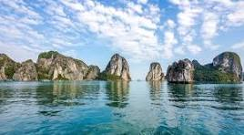
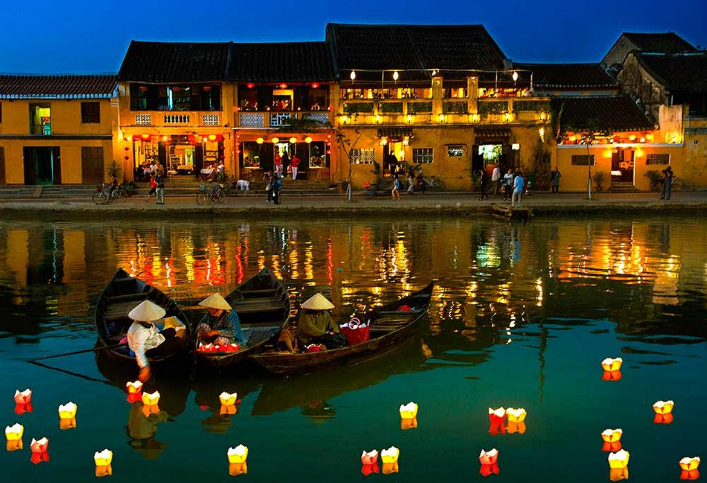
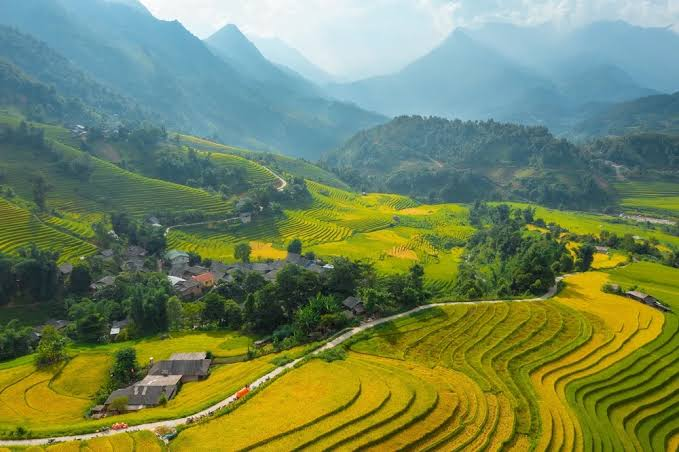
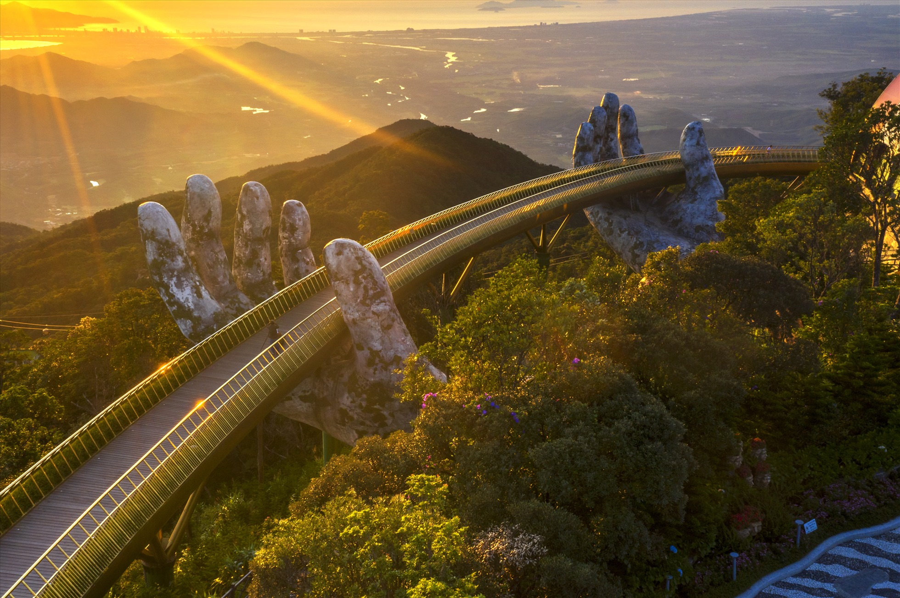
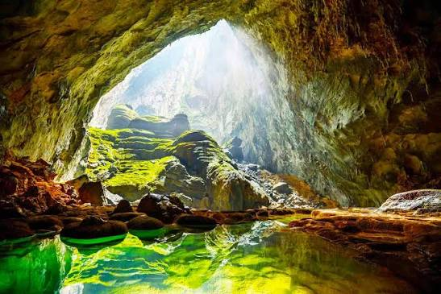
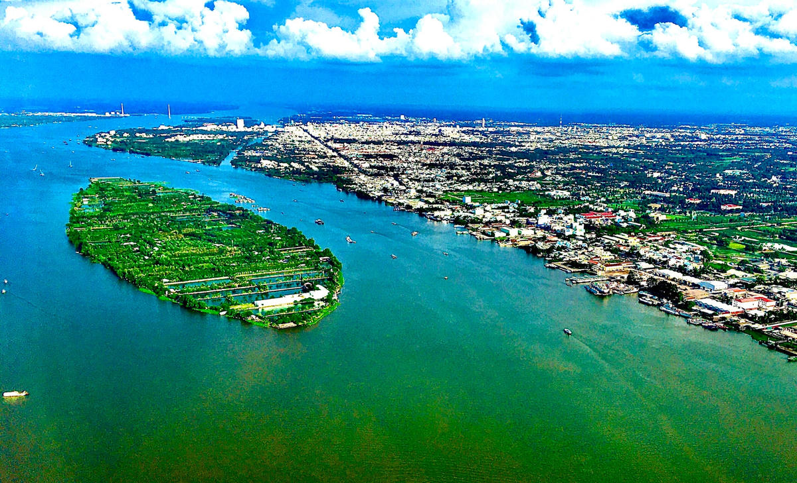
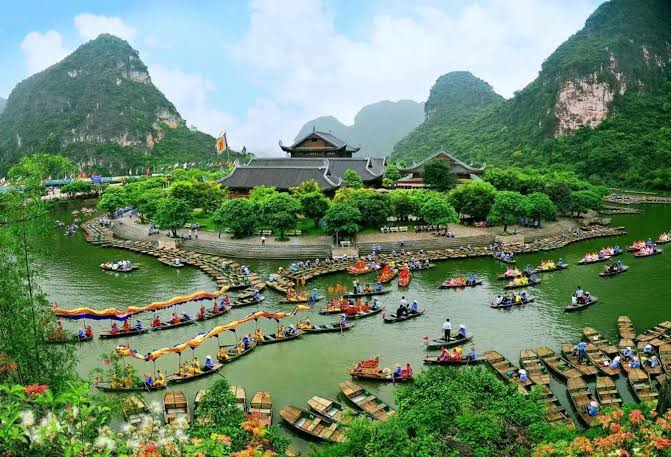
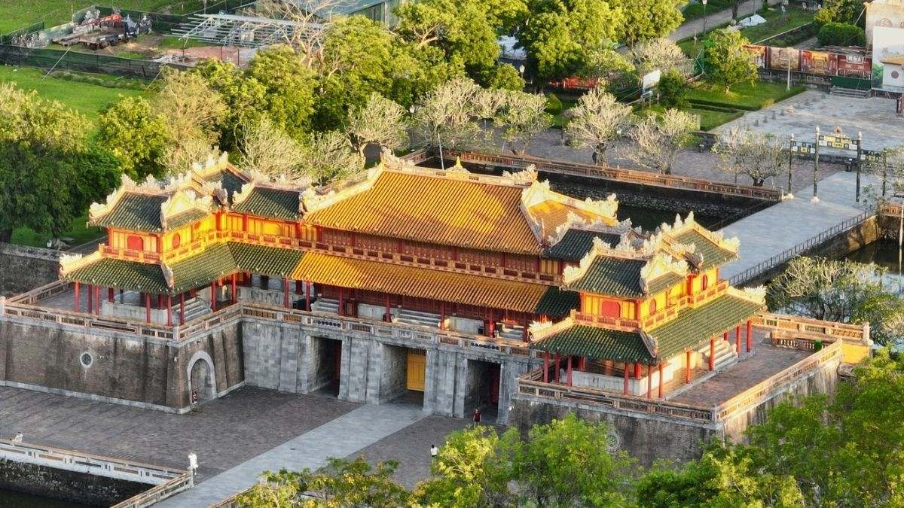
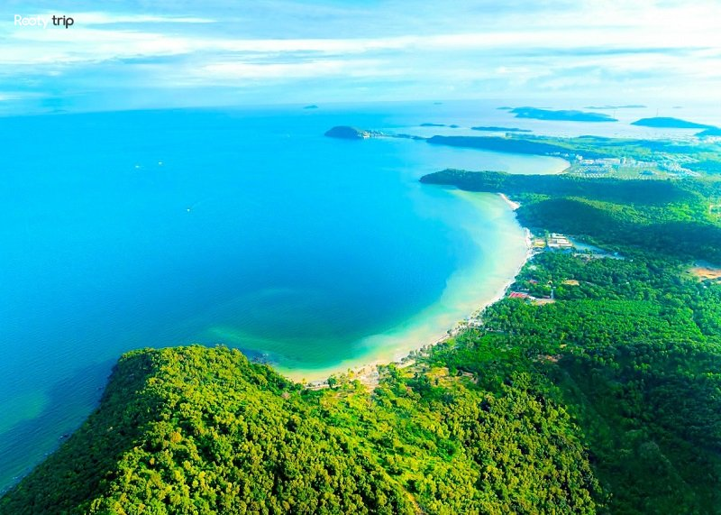

Vietnam reaches from cloudy mountains in the north to green river areas in the south, with many amazing natural places and historic sites. Every part of the country keeps its own scenery, local customs, and building styles.
This gallery highlights nine iconic destinations across the country.








